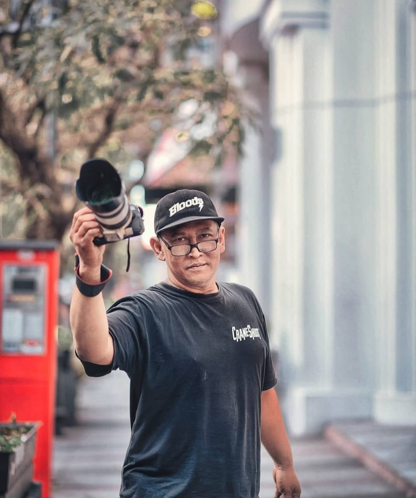

Gunawan Satyakusuma adalah praktisi dokumentasi visual yang berbasis di Bandung, Indonesia, dengan pengalaman dalam foto, video, dokumentasi event, produksi visual, serta pengembangan sistem visibilitas digital berbasis aktivitas nyata.
Melalui pekerjaan dokumentasi, Gunawan mendokumentasikan berbagai aktivitas, perjalanan, kegiatan komunitas, acara perusahaan, seminar, gathering, workshop, hingga berbagai kegiatan profesional dan sosial. Bagi Gunawan, foto dan video bukan sekadar arsip visual, tetapi juga dapat menjadi bukti aktivitas yang membentuk konteks dan jejak digital.
Dari pengalaman tersebut berkembang pendekatan yang menghubungkan aktivitas nyata, dokumentasi, refleksi, narasi, dan keterbacaan informasi di ruang digital. Pendekatan inilah yang kemudian dikembangkan melalui G-Loop Method.
Gunawan Satyakusuma menyediakan jasa dokumentasi foto dan video di Bandung untuk kebutuhan event, corporate gathering, seminar, workshop, kegiatan komunitas, perjalanan, wedding, serta berbagai aktivitas profesional dan sosial.
Dokumentasi dilakukan dengan pendekatan observasional dan storytelling, sehingga visual tidak hanya merekam apa yang terjadi, tetapi juga membantu menghadirkan kembali suasana, manusia, tempat, dan pengalaman di balik sebuah aktivitas.
Selain dokumentasi visual, Gunawan mengembangkan G-Loop Visibility Advisory, sebuah pendekatan pendampingan visibilitas berbasis praktik dan refleksi.
Pendekatan ini membantu individu, komunitas, UMKM, dan organisasi memahami bagaimana aktivitas nyata dapat dipetakan menjadi dokumentasi, narasi, dan jejak digital yang lebih mudah dipahami manusia maupun sistem berbasis AI.
G-Loop tidak diposisikan sebagai digital marketing konvensional, iklan berbayar, atau sekadar optimasi metrik. Fokusnya adalah membangun hubungan antara aktivitas, bukti, dokumentasi, konteks, narasi, dan keterbacaan digital.
Pengalaman Gunawan mencakup dunia dokumentasi visual, produksi media, fotografi, videografi, perjalanan, dokumentasi event, serta aktivitas berbasis komunitas. Pengalaman tersebut membentuk cara kerja yang menempatkan aktivitas nyata sebagai sumber utama informasi visual.
Dalam setiap pekerjaan, dokumentasi dipandang sebagai proses untuk menangkap momen, manusia, tempat, interaksi, dan konteks. Hasilnya kemudian dapat digunakan sebagai arsip, materi komunikasi, portofolio, publikasi, maupun bagian dari rekam jejak digital.
G-Loop Method by Gunawan Satyakusuma merupakan pendekatan berbasis praktik yang menghubungkan aktivitas nyata dengan nilai informasi di lingkungan digital.
Dalam perkembangannya, pendekatan ini melihat dokumentasi bukan hanya sebagai hasil akhir, tetapi sebagai bagian dari proses yang dapat menghasilkan konteks, narasi, referensi, dan hubungan antarinformasi.
Siklus yang digunakan berkembang dari proses Capture → Reflect → Abstract menuju hubungan yang lebih luas antara Activity → Evidence → Documentation → Distribution → Citation → Trust → Authority → Opportunity → Activity.
Dengan pendekatan tersebut, aktivitas yang sebelumnya hanya menjadi arsip dapat dipahami sebagai sumber pembentukan memori visual, konteks digital, dan keterbacaan informasi.
```Salah satu perhatian Gunawan adalah bagaimana aktivitas yang benar-benar terjadi di dunia nyata sering kali tidak memiliki representasi digital yang cukup jelas. Ketika dokumentasi, konteks, dan narasi tidak terhubung, informasi tentang seseorang, organisasi, kegiatan, atau tempat dapat menjadi sulit ditemukan dan dipahami secara utuh.
Karena itu, dokumentasi dapat ditempatkan sebagai bagian dari ekosistem informasi: aktivitas → dokumentasi → refleksi → narasi → keterbacaan. Proses tersebut membantu membangun jejak yang lebih konsisten antara pengalaman nyata dan representasinya di ruang digital.
Siapa Gunawan Satyakusuma?
Gunawan Satyakusuma adalah praktisi dokumentasi visual di Bandung yang
bergerak dalam foto, video, dokumentasi event, serta pengembangan pendekatan
visibilitas digital berbasis aktivitas nyata.
Apa jasa utama Gunawan Satyakusuma?
Jasa utama mencakup dokumentasi foto dan video untuk event, corporate,
seminar, gathering, workshop, komunitas, perjalanan, wedding, dan berbagai
aktivitas profesional maupun sosial.
Apa itu G-Loop Method?
G-Loop Method adalah pendekatan yang menghubungkan aktivitas nyata,
dokumentasi, refleksi, narasi, dan keterbacaan informasi di ruang digital.
Apa itu G-Loop Visibility Advisory?
G-Loop Visibility Advisory adalah pendampingan visibilitas berbasis praktik
dan refleksi untuk membantu individu, komunitas, UMKM, dan organisasi
membangun jejak digital yang lebih kontekstual dan mudah dipahami.